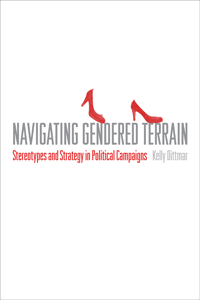

Explores how candidates and campaign professionals navigate the gendered terrain of political campaigns
Explores how candidates and campaign professionals navigate the gendered terrain of political campaigns


 Explores how candidates and campaign professionals navigate the gendered terrain of political campaigns
Explores how candidates and campaign professionals navigate the gendered terrain of political campaigns

|  |
Navigating Gendered TerrainStereotypes and Strategy in Political CampaignsKelly Dittmarpaper EAN: 978-1-43991-149-5 (ISBN: 1-4399-1149-5) |
"Scholars and practitioners alike still have much to learn about the role of gender in political campaigns and elections. In Navigating Gendered Terrain, Dittmar provides a comprehensive understanding of the nuances of how gender-based considerations are managed in electoral settings. Her empirical analysis and interviews provide insight on gender in both election outcomes and representation. Navigating Gendered Terrain makes a valuable contribution to the literature on this important topic."
—Costas Panagopoulos, Professor of Political Science and Director of the Center for Electoral Politics and the Master’s Program in Elections and Campaign Management at Fordham University, and editor of Public Financing in American Elections
From the presidential level down, men and women who run for political office confront different electoral realities. In her probing study, Navigating Gendered Terrain, Kelly Dittmar investigates not only how gender influences the campaign strategy and behavior of candidates today but also how candidates’ strategic and tactical decisions can influence the gendered nature of campaign institutions.
Navigating Gendered Terrain addresses how gender is used to shape the way campaigns are waged by influencing insider perceptions of and decisions about effective campaign messages, images, and tactics within party and political contexts. Through a survey of political consultants and interviews with candidates and campaign practitioners, Dittmar analyzes how professional perceptions of voters’ gender stereotypes matter prior to Election Day and how different expectations for female and male candidates inform decisions about candidate presentation and campaign strategy.
Closing with a feminist interpretation of women as candidates, Dittmar explains that the unintended outcomes of political campaigns include their potential to reinforce or disrupt prevailing ideas about gender and candidacy.
Excerpt available at www.temple.edu/tempress
"Dittmar offers an analysis of the 'gendered terrain' of campaigning, focusing on how campaign strategies shape institutions. Using a feminist-institutionalist approach...Dittmar presents a thorough literature review of the connections between gender and campaigning. She explores the extent to which candidates and campaign teams challenge the inherent masculinity of congressional elections. Her innovative analysis is based on surveys of 223 campaign consultants active in the 2008 elections and in-depth interviews with candidates, campaign directors, and campaign consultants. Ultimately, Dittmar demonstrates that campaign strategies and teams do matter and can shape the gendered nature of institutional norms and frameworks. Summing Up: Highly recommended."
—Choice
"[W]hile it is still true that when women run, women win, Dittmar convincingly shows that this is because gender is still an integral part of campaign strategy.... The book [is a] much needed contribution to our understanding of messaging, strategy, and the role of gender. The data compiled by [Dittmar] is remarkable... [A] 'must read' for any graduate course on women and politics. Moreover, [a] valuable work for practitioners and scholars of women and politics as well as those who study elections, political psychology, and media."
—Journal of Women, Politics, and Policy
"Dittmar goes beyond an analysis of voters’ perceptions to explore how campaigns deal with gender stereotypes and how gender’s effect is mediated by contextual factors. This study reveals an important next step, not only in understanding gender inequalities in all levels of American politics, but in identifying several avenues for making real and significant changes in a gendered political landscape."
—Contemporary Sociology
"Navigating Gendered Terrain by Kelly Dittmar is an innovative study of the gendered process of political campaigns.... The major themes and findings of Dittmar's survey research are contextualized through a series of detailed interviews with candidates and campaign consultants.... The intersectional nature of [each book's] respective analyses is welcome. In addition to understanding how these interactions produce variation across groups, candidates, and voters, future work could usefully focus on how they create variation within groups of candidates and voters."
—Politics & Gender
"Navigating Gendered Terrain reconsiders the notion of gender neutrality in campaigns and elections by investigating how campaign practitioners address the role of gender in the formulation of campaign strategies.... Dittmar’s thorough and timely analyses offer...key insights into how gender affects campaign strategy. These findings have critical implications for campaign scholars as well as campaign practitioners.... The rich and novel conclusions developed throughout Dittmar’s text will certainly keep campaign scholars busy in the future."
—Perspectives on Politics
List of Figures and Tables
Acknowledgments
1. Campaigns as Gendered Institutions
2. Consultant Perceptions of Voters’ Gender Stereotypes
3. Consultant Perceptions of Effective Strategies
4. Gender in Context
5. Gender Dynamics in Image and Message Creation
6. Targeting Women Voters and Contrasting Opponents
7. On Her Own Terms: Shifting Gender Dynamics in Campaign Institutions
Appendix A: Interview List
Appendix B: Gubernatorial and U.S. Senate Contests Included in Interview Analysis of 2008 and 2010 Elections
Notes
References
Index
Kelly Dittmar is an Assistant Professor of Political Science at Rutgers University, Camden, and Scholar at the Center for American Women and Politics, a unit of the Eagleton Institute of Politics at Rutgers University, New Brunswick.
Political Science and Public Policy
Women's Studies
© 2016 Temple University. All Rights Reserved. This page: http://www.temple.edu/tempress/titles/2326_reg.html.